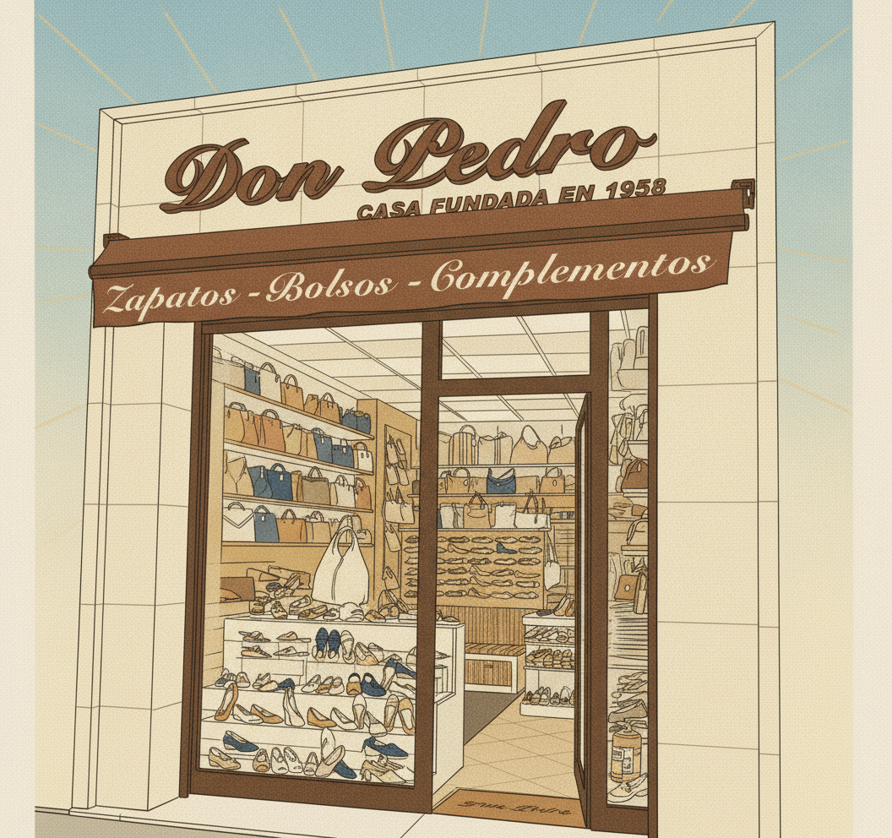
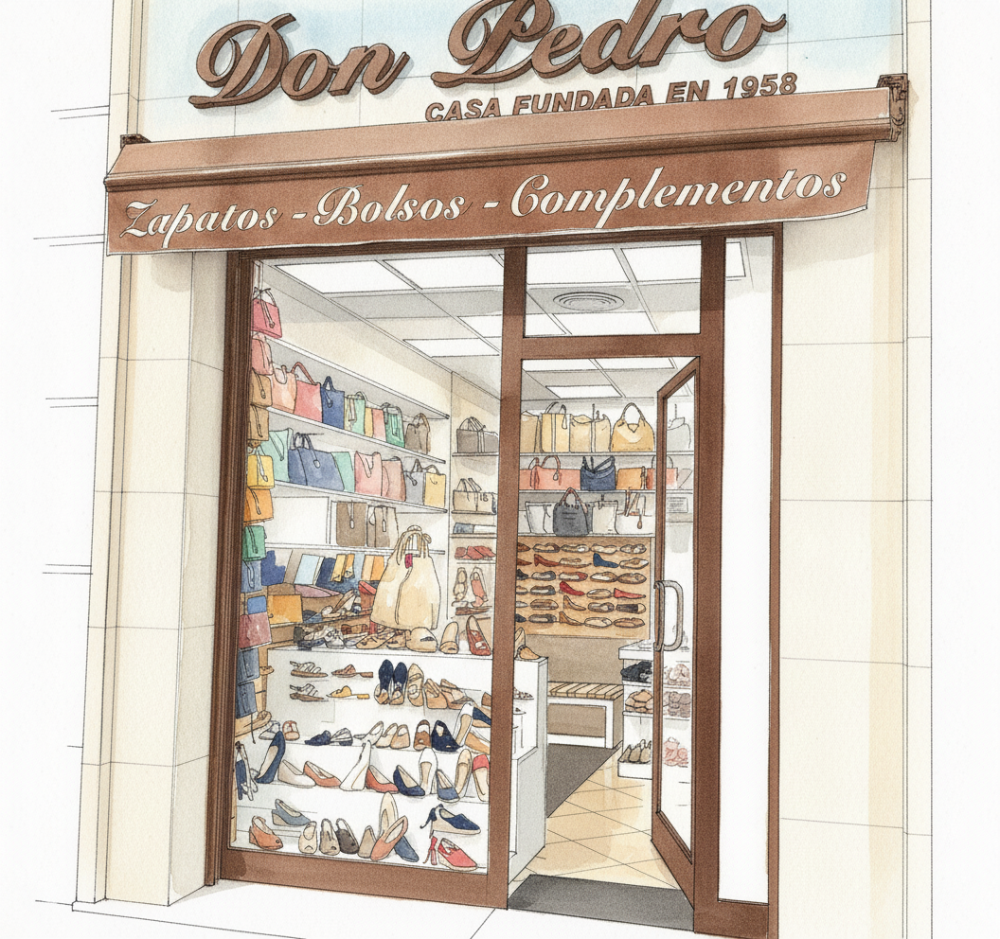
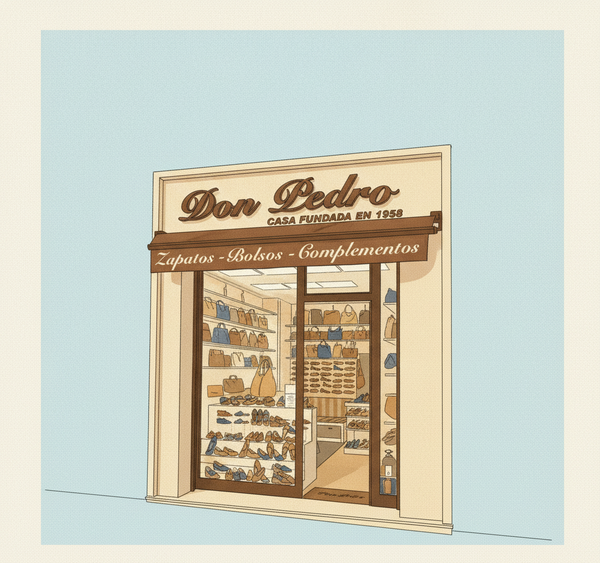

1 Illustration of the facade of a classic family shoe shop in Madrid, based on the attached reference photo (same layout): cream stone-tiled facade; large cursive brown 3D letters reading "Don Pedro" with "CASA FUNDADA EN 1958" underneath; brown fabric awning with elegant cream cursive text "Zapatos - Bolsos - Complementos"; a big shop window full of colourful women shoes and leather handbags on shelves (generic decorative shoes); a glass door with dark brown frame on the right, slightly ajar, warm light inside; a doormat. Remove the security camera, alarm box, fire extinguisher and signs. Vertical portrait composition (9:16), the facade occupies the lower 60 percent, the top 40 percent is open empty sky with no objects, reserved for a title. Palette: leather brown #816040, cream #F1E6B2, gold #CEB888, navy #2E4674, warm off-white #FBF7EA. Warm, welcoming, elegant, respectful. No people. No extra text anywhere except the shop sign and awning.
STYLE: hand-painted gouache illustration on textured paper, soft edges without outlines, visible brush strokes, warm golden late-afternoon light, nostalgic storybook feel for adults.

2 Illustration of the facade of a classic family shoe shop in Madrid, based on the attached reference photo (same layout): cream stone-tiled facade; large cursive brown 3D letters reading "Don Pedro" with "CASA FUNDADA EN 1958" underneath; brown fabric awning with elegant cream cursive text "Zapatos - Bolsos - Complementos"; a big shop window full of colourful women shoes and leather handbags on shelves (generic decorative shoes); a glass door with dark brown frame on the right, slightly ajar, warm light inside; a doormat. Remove the security camera, alarm box, fire extinguisher and signs. Vertical portrait composition (9:16), the facade occupies the lower 60 percent, the top 40 percent is open empty sky with no objects, reserved for a title. Palette: leather brown #816040, cream #F1E6B2, gold #CEB888, navy #2E4674, warm off-white #FBF7EA. Warm, welcoming, elegant, respectful. No people. No extra text anywhere except the shop sign and awning.
STYLE: clean-line mid-century Spanish commercial poster illustration (generic 1950s-60s advertising look, not imitating any specific artist): thin dark ink outlines, flat colour areas, subtle printed grain, graphic sun rays in the sky.

3 Illustration of the facade of a classic family shoe shop in Madrid, based on the attached reference photo (same layout): cream stone-tiled facade; large cursive brown 3D letters reading "Don Pedro" with "CASA FUNDADA EN 1958" underneath; brown fabric awning with elegant cream cursive text "Zapatos - Bolsos - Complementos"; a big shop window full of colourful women shoes and leather handbags on shelves (generic decorative shoes); a glass door with dark brown frame on the right, slightly ajar, warm light inside; a doormat. Remove the security camera, alarm box, fire extinguisher and signs. Vertical portrait composition (9:16), the facade occupies the lower 60 percent, the top 40 percent is open empty sky with no objects, reserved for a title. Palette: leather brown #816040, cream #F1E6B2, gold #CEB888, navy #2E4674, warm off-white #FBF7EA. Warm, welcoming, elegant, respectful. No people. No extra text anywhere except the shop sign and awning.
STYLE: loose ink and watercolour sketchbook illustration, nervous elegant ink line, transparent watercolour washes that spill outside the lines, lots of white paper showing, like a travel sketch of Madrid.

4 Illustration of the facade of a classic family shoe shop in Madrid, based on the attached reference photo (same layout): cream stone-tiled facade; large cursive brown 3D letters reading "Don Pedro" with "CASA FUNDADA EN 1958" underneath; brown fabric awning with elegant cream cursive text "Zapatos - Bolsos - Complementos"; a big shop window full of colourful women shoes and leather handbags on shelves (generic decorative shoes); a glass door with dark brown frame on the right, slightly ajar, warm light inside; a doormat. Remove the security camera, alarm box, fire extinguisher and signs. Vertical portrait composition (9:16), the facade occupies the lower 60 percent, the top 40 percent is open empty sky with no objects, reserved for a title. Palette: leather brown #816040, cream #F1E6B2, gold #CEB888, navy #2E4674, warm off-white #FBF7EA. Warm, welcoming, elegant, respectful. No people. No extra text anywhere except the shop sign and awning.
STYLE: clean-line mid-century Spanish commercial poster illustration (generic, not imitating any artist) with thin dark ink outlines and flat colour areas, but bathed in warm golden late-afternoon gouache-like light with soft painted shading and paper texture.